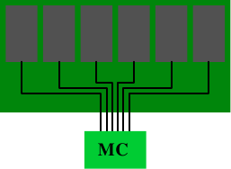
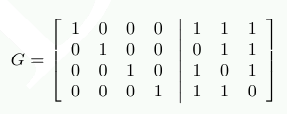
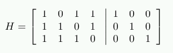
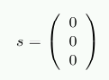
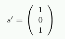

Advertisement
Stand out from the crowd. Get yourself some of these LWN T-shirts, stickers, mugs, and more.
| ||||||||||||||||||||||||||||||||||||||||||||||||||||||||||||||||||||||||||||||||||||||||||||||||||||||||||||||||
Memory part 9: Appendices and bibliography
[Editor's note: what follows is the set of appendices and the
bibliography from What every programmer should
know about memory by Ulrich Drepper.]
9 Examples and Benchmark Programs
9.1 Matrix MultiplicationThis is the complete benchmark program for the matrix multiplication in section Section 6.2.1. For details on the intrinsics used the reader is referred to Intel's reference manual.
#include <stdlib.h> #include <stdio.h> #include <emmintrin.h> #define N 1000 double res[N][N] __attribute__ ((aligned (64))); double mul1[N][N] __attribute__ ((aligned (64))); double mul2[N][N] __attribute__ ((aligned (64))); #define SM (CLS / sizeof (double)) The structure of the loops is pretty much the same as in the final incarnation in Section 6.2.1. The one big change is that loading the rmul1[k2] value has been pulled out of the inner loop since we have to create a vector where both elements have the same value. This is what the _mm_unpacklo_pd() intrinsic does. The only other noteworthy thing is that we explicitly aligned the three arrays so that the values we expect to be in the same cache line actually are found there.
9.2 Debug Branch PredictionIf, as recommended, the definitions of likely and unlikely from Section 6.2.2 are used, it is easy {At least with the GNU toolchain.} to have a debug mode to check whether the assumptions are really true. The definitions of the macros could be replaced with this:
These macros use a lot of functionality provided by the GNU assembler and linker when creating ELF files. The first asm statement in the DEBUGPRED case defines three additional sections; it mainly gives the assembler information about how the sections should be created. All sections are available at runtime, and the predict_data section is writable. It is important that all section names are valid C identifiers. The reason will be clear shortly. The new definitions of the likely and unlikely macros refer to the machine-specific debugpred__ macro. This macro has the following tasks:
The .pushsection and .popsection pseudo-ops are described in the assembler manual. The interested reader is asked to explore the details of these definition with the help of the manuals and some trial and error. These macros automatically and transparently take care of collecting the information about correct and incorrect branch predictions. What is missing is a method to get to the results. The simplest way is to define a destructor for the object and print out the results there. This can be achieved with a function defined like this:
extern long int __start_predict_data; extern long int __stop_predict_data; extern long int __start_predict_line; extern const char *__start_predict_file; Here the fact that the section names are valid C identifiers comes into play; it is used by the GNU linker to automatically define, if needed, two symbols for the section. The __start_XYZ symbols corresponds to the beginning of the section XYZ and __stop_XYZ is the location of the first byte following section XYZ. These symbols make it possible to iterate over the section content at runtime. Note that, since the content of the sections can come from all the files the linker uses at link time, the compiler and assembler do not have enough information to determine the size of the section. Only with these magic linker-generated symbols is it possible to iterate over the section content. The code does not iterate over one section only, though; there are three sections involved. Since we know that, for every two words added to the predict_data section we add one word to each of the predict_line and predict_file sections, we do not have to check the boundaries of these two sections. We just carry pointers along and increment them in unison. The code prints out a line for every prediction which appears in the code. It highlights those uses where the prediction is incorrect. Of course, this can be changed, and the debug mode could be restricted to flag only the entries which have more incorrect predictions than correct ones. Those are candidates for change. There are details which complicate the issue; for example, if the branch prediction happens inside a macro which is used in multiple places, all the macro uses must be considered together before making a final judgment. Two last comments: the data required for this debugging operation is not small, and, in case of DSOs, expensive (the predict_file section must be relocated). Therefore the debugging mode should not be enabled in production binaries. Finally, each executable and DSO creates it own output, this must be kept in mind when analyzing the data.
9.3 Measure Cache Line Sharing OverheadThis section contains the test program to measure the overhead of using variables on the same cache line versus variables on separate cache lines.
The code is provided here mainly as an illustration of how to write a program which measures effects like cache line overhead. The interesting parts are the bodies of the loops in tf. The __sync_add_and_fetch intrinsic, known to the compiler, generates an atomic add instruction. In the second loop we have to “consume” the result of the increment (through the inline asm statement). The asm does not introduce any actual code; instead, it prevents the compiler from lifting the increment operation out of the loop. The second interesting part is that the program pins the threads onto specific processors. The code assumes the processors are numbered 0 to 3, which is usually the case if the machine has four or more logical processors. The code could have used the interfaces from libNUMA to determine the numbers of the usable processors, but this test program should be widely usable without introducing this dependency. It is easy enough to fix up one way or another.
10 Some OProfile TipsThe following is not meant as a tutorial on how to use oprofile. There are entire documents written on that topic. Instead it is meant to give a few higher-level hints on how to look at one's programs to find possible trouble spots. But before that we must at least have a minimal introduction.
10.1 Oprofile BasicsOprofile works in two phases: collection and then analysis. The collection is performed by the kernel; it cannot be done at userlevel since the measurements use the performance counters of the CPU. These counters require access to MSRs which, in turn, requires privileges. Each modern processor provides its own set of performance counters. On some architectures a subset of the counters are provided by all processor implementations while the others differ from version to version. This makes giving general advice about the use of oprofile hard. There is not (yet) a higher-level abstraction for the counters which could hide these details. The processor version also controls how many events can be traced at any one time, and in which combination. This adds yet more complexity to the picture. If the user knows the necessary details about the performance counters, the opcontrol program can be used to select the events which should be counted. For each event it is necessary to specify the “overrun number” (the number of events which must occur before the CPU is interrupted to record an event), whether the event should be counted for userlevel and/or the kernel, and finally a “unit mask” (it selects sub-functions of the performance counter). To count the CPU cycles on x86 and x86-64 processors, one has to issue the following command:
opcontrol --event CPU_CLK_UNHALTED:30000:0:1:1 The number 30000 is the overrun number. Choosing a reasonable value is important for the behavior of the system and the collected data. It is a bad idea ask to receive data about every single occurrence of the event. For many events, this would bring the machine to a standstill since all it would do is work on the data collection for the event overrun; this is why oprofile enforces a minimum value. The minimum values differ for each event since different events have a different probability of being triggered in normal code. Choosing a very high number reduces the resolution of the profile. At each overrun oprofile records the address of the instruction which is executed at that moment; for x86 and PowerPC it can, under some circumstances, record the backtrace as well. {Backtrace support will hopefully be available for all architectures at some point.} With a coarse resolution, the hot spots might not get a representative number of hits; it is all about probabilities, which is why oprofile is called a probabilistic profiler. The lower the overrun number is the higher the impact on the system in terms of slowdown but the higher the resolution. If a specific program is to be profiled, and the system is not used for production, it is often most useful to use the lowest possible overrun value. The exact value for each event can be queried using
opcontrol --list-events This might be problematic if the profiled program interacts with another process, and the slowdown causes problems in the interaction. Trouble can also result if a process has some realtime requirements which cannot be met when it is interrupted often. In this case a middle ground has to be found. The same is true if the entire system is to be profiled for extended periods of time. A low overrun number would mean the massive slowdowns. In any case, oprofile, like any other profiling mechanism, introduces uncertainty and inaccuracy. The profiling has to be started with opcontrol --start and can be stopped with opcontrol --stop. While oprofile is active it collects data; this data is first collected in the kernel and then send to a userlevel daemon in batches, where it is decoded and written to a filesystem. With opcontrol --dump it is possible to request all information buffered in the kernel to be released to userlevel. The collected data can contain events from different performance counters. The numbers are all kept in parallel unless the user selects to wipe the stored data in between separate oprofile runs. It is possible to accumulate data from the same event at different occasions. If an event is encountered during different profiling runs the numbers are added if this is what is selected by the user. The userlevel part of the data collection process demultiplexes the data. Data for each file is stored separately. It is even possible to differentiate DSOs used by individual executable and, even, data for individual threads. The data thus produced can be archived using oparchive. The file produced by this command can be transported to another machine and the analysis can be performed there. With the opreport program one can generate reports from the profiling results. Using opannotate it is possible to see where the various events happened: which instruction and, if the data is available, in which source line. This makes it easy to find hot spots. Counting CPU cycles will point out where the most time is spent (this includes cache misses) while counting retired instructions allows finding where most of the executed instructions are—there is a big difference between the two. A single hit at an address usually has no meaning. A side effect of statistical profiling is that instructions which are only executed a few times, or even only once, might be attributed with a hit. In such a case it is necessary to verify the results through repetition.
10.2 What It Looks LikeAn oprofile session can look as simple as this:
$ opcontrol -i cachebench $ opcontrol -e INST_RETIRED:6000:0:0:1 --start $ ./cachebench ... $ opcontrol -h Note that these commands, including the actual program, are run as root. Running the program as root is done here only for simplicity; the program can be executed by any user and oprofile would pick up on it. The next step is analyzing the data. With opreport we see:
CPU: Core 2, speed 1596 MHz (estimated) Counted INST_RETIRED.ANY_P events (number of instructions retired) with a unit mask of 0x00 (No unit mask) count 6000 INST_RETIRED:6000| samples| %| ------------------ 116452 100.000 cachebench This means we collected a bunch of events; opannotate can now be used to look at the data in more detail. We can see where in the program the most events were recorded. Part of the opannotate --source output looks like this:
That is the inner function of the test, where a large portion of the time is spent. We see the samples spread out over all three lines of the loop. The main reason for this is that the sampling is not always 100% accurate with respect to the recorded instruction pointer. The CPU executes instructions out of order; reconstructing the exact sequence of execution to produce a correct instruction pointer is hard. The most recent CPU versions try to do this for a select few events but it is, in general, not worth the effort—or simply not possible. In most cases it does not really matter. The programmer should be able to determine what is going on even if there is a normally-distributed set of samples.
10.3 Starting To ProfileWhen starting to analyze a body of code, one certainly can start looking at the places in the program where the most time is spent. That code should certainly be optimized as well as possible. But what happens next? Where is the program spending unnecessary time? This question is not so easy to answer. One of the problems in this situation is that absolute values do not tell the real story. One loop in the program might demand the majority of the time, and this is fine. There are many possible reasons for the high CPU utilization, though. But what is more common, is that CPU usage is more evenly spread throughout the program. In this case, the absolute values point to many places, which is not useful. In many situations it is helpful to look at ratios of two events. For instance, the number of mispredicted branches in a function can be meaningless if there is no measure for how often a function was executed. Yes, the absolute value is relevant for the program's performance. The ratio of mispredictions per call is more meaningful for the code quality of the function. Intel's optimization manual for x86 and x86-64 [intelopt] describes ratios which should be investigated (Appendix B.7 in the cited document for Core 2 events). A few of the ratios relevant for memory handling are the following.
For all these ratios, the program should be run with oprofile being instructed to measure both events. This guarantees the two counts are comparable. Before the division, one has to make sure that the possibly different overrun values are taken into account. The simplest way is to ensure this is by multiplying each events counter by the overrun value. The ratios are meaningful for whole programs, at the executable/DSO level, or even at the function level. The deeper one looks into the program, the more errors are included in the value. What is needed to make sense of the ratios are baseline values. This is not as easy as it might seem. Different types of code has different characteristics and a ratio value which is bad in one program might be normal in another program.
11 Memory Types
Though it is not necessary knowledge for efficient programming, it might be useful to describe some more technical details of available memory types. Specifically we are here interested in the difference of “registered” versus “unregistered” and ECC versus non-ECC DRAM types. The terms “registered” and “buffered” are used synonymously when describing a DRAM type which has one additional component on the DRAM module: a buffer. All DDR memory types can come in registered and unregistered form. For the unregistered modules, the memory controller is directly connected to all the chips on the module. Figure 11.1 shows the setup.
 Electrically this is quite demanding. The memory controller must be able to deal with the capacities of all the memory chips (there are more than the six shown in the figure). If the memory controller (MC) has a limitation, or if many memory modules are to be used, this setup is not ideal.
Buffered (or registered) memory changes the situation: instead of directly connecting the RAM chips on the DRAM module to the memory, they are connected to a buffer which, in turn, is then connected to the memory controller. This significantly reduces the complexity of the electrical connections. The ability of the memory controllers to drive DRAM modules increases by a factor corresponding to the number of connections saved. With these advantages the question is: why aren't all DRAM modules buffered? There are several reasons. Obviously, buffered modules are a bit more complicated and, hence, more expensive. Cost is not the only factor, though. The buffer delays the signals from the RAM chips a bit; the delay must be high enough to ensure that all signals from the RAM chips are buffered. The result is that the latency of the DRAM module increases. A last factor worth mentioning here is that the additional electrical component increases the energy cost. Since the buffer has to operate at the frequency of the bus this component's energy consumption can be significant. With the other factors of the use of DDR2 and DDR3 modules it is usually not possible to have more than two DRAM modules per bank. The number of pins of the memory controller limit the number of banks (to two in commodity hardware). Most memory controllers are able to drive four DRAM modules and, therefore, unregistered modules are sufficient. In server environments with high memory requirements the situation might be different. A different aspect of some server environments is that they cannot tolerate errors. Due to the minuscule charges held by the capacitors in the RAM cells, errors are possible. People often joke about cosmic radiation but this is indeed a possibility. Together with alpha decays and other natural phenomena, they lead to errors where the content of RAM cell changes from 0 to 1 or vice versa. The more memory is used, the higher the probability of such an event. If such errors are not acceptable, ECC (Error Correction Code) DRAM can be used. Error correction codes enable the hardware to recognize incorrect cell contents and, in some cases, correct the errors. In the old days, parity checks only recognized errors, and the machine had to be stopped when one was detected. With ECC, instead, a small number of erroneous bits can be automatically corrected. If the number of errors is too high, though, the memory access cannot be performed correctly and the machine still stops. This is a rather unlikely case for working DRAM modules, though, since multiple errors must happen on the same module. When we speak about ECC memory we are actually not quite correct. It is not the memory which performs the error checking; instead, it is the memory controller. The DRAM modules simply provide more storage and transport the additional non-data bits along with the real data. Usually, ECC memory stores one additional bit for each 8 data bits. Why 8 bits are used will be explained a bit later. Upon writing data to a memory address, the memory controller computes the ECC for the new content on the fly before sending that data and ECC onto the memory bus. When reading, the data plus the ECC is received, the memory controller computes the ECC for the data, and compares it with the ECC transmitted from the DRAM module. If the ECCs match everything is fine. If they do not match, the memory controller tries to correct the error. If this correction is not possible, the error is logged and the machine is possibly halted.
Several techniques for error correction are in use but, for DRAM ECC, usually Hamming codes are used. Hamming codes originally were used to encode four data bits with the ability to recognize and correct one flipped bit (SEC, Single Error Correction). The mechanism can easily be extended to more data bits. The relationship between the number of data bits W and the number of bits for the error code E is described by the equation
E = ⌈log2 (W+E+1)⌉ Solving this equation iteratively results in the values shown in the second column of Table 11.1. With an additional bit, we can recognize two flipped bits using a simple parity bit. This is then called SEC/DED, Single Error Correction/Double Error Detection. With this additional bit we arrive at the values in the fourth column of Table 11.1. The overhead for W=64 is sufficiently low and the numbers (64, 8) are multiples of 8, so this is a natural selection for ECC. On most modules, each RAM chip produces 8 bits and, therefore, any other combination would lead to less efficient solution.
The Hamming code computation is easy to demonstrate with a code using W=4 and E=3. We compute parity bits at strategic places in the encoded word. Figure 11.3 shows the principle. At the bit positions corresponding to the powers of two the parity bits are added. The parity sum for the first parity bit P1 contains every second bit. The parity sum for the second parity bit P2 contains data bits 1, 3, and 4 (encoded here as 3, 6, and 7). Similar ly P4 is computed. The computation of the parity bits can be more elegantly described using a matrix multiplication. We construction a matrix G = [I|A] where I is the identity matrix and A is the parity generation matrix we can determine from Figure 11.3.
 The columns of A are constructed from the bits used in the computation of P1, P2, and P4. If we now represent each input data item as a 4-dimensional vector d we can compute r=d⋅G and get a 7-dimensional vector r. This is the data which in the case of ECC DDR is stored. To decode the data we construct a new matrix H=[AT|I] where AT is the transposed parity generation matrix from the computation of G. That means:
 The result of H⋅r shows whether the stored data is defective. If this is not the case, the product is the 3-dimensional vector (0 0 0)T. Otherwise the value of the product, when interpreted as the binary representation of a number, indicates the column number with the flipped bit. As an example, assume d=(1 0 0 1). This results in
r = (1 0 0 1 0 0 1) Performing the test using the multiplication with H results in
 Now, assume we have a corruption of the stored data and read back from memory r' = (1 0 1 1 0 0 1). In this case we get
 The vector is not the null vector and, when interpreted as a number, s' has the value 5. This is the number of the bit we flipped in r' (starting to count the bits from 1). The memory controller can correct the bit and the programs will not notice that there has been a problem. Handling the extra bit for the DED part is only slightly more complex. With more effort is it possible to create codes which can correct two flipped bits and more. It is probability and risk which decide whether this is needed. Some memory manufacturers say an error can occur in 256MB of RAM every 750 hours. By doubling the amount of memory the time is reduced by 75%. With enough memory the probability of experiencing an error in a short time can be significant and ECC RAM becomes a requirement. The time frame could even be so small that the SEC/DED implementation is not sufficient. Instead of implementing even more error correction capabilities, server motherboards have the ability to automatically read all memory over a given timeframe. That means, whether or not the memory was actually requested by the processor, the memory controller reads the data and, if the ECC check fails, writes the corrected data back to memory. As long as the probablity of incurring less than two memory errors in the time frame needed to read all of memory and write it back is acceptable, SEC/DED error correction is a perfectly reasonable solution. As with registered DRAM, the question has to be asked: why is ECC DRAM not the norm? The answer to this question is the same as for the equivalent question about registered RAM: the extra RAM chip increases the cost and the parity computation increases the delay. Unregistered, non-ECC memory can be significantly faster. Because of the similarity of the problems of registered and ECC DRAM, one usually only finds registered, ECC DRAM and not registered, non-ECC DRAM.
There is another method to overcome memory errors. Some manufacturers offer what is often incorrectly called “memory RAID” where the data is distributed redundantly over multiple DRAM modules, or at least RAM chips. Motherboards with this feature can use unregistered DRAM modules, but the increased traffic on the memory busses is likely to negate the difference in access times for ECC and non-ECC DRAM modules.
12 libNUMA IntroductionAlthough much of the information programmers need to schedule threads optimally, allocate memory appropriately, etc. is available, this information is cumbersome to get at. The existing NUMA support library (libnuma, in the numactl package on RHEL/Fedora systems) does not, by a long shot, provide adequate functionality. As a response, the author has proposed a new library which provides all the functionality needed for NUMA. Due to the overlap of memory and cache hierarchy handling, this library is also useful for non-NUMA systems with multi-thread and multi-core processors—almost every currently-available machine. The functionality of this new library is urgently needed to follow the advice given in this document. This is the only reason why it is mentioned here. The library (as of this writing) is not finished, not reviewed, not polished, and not (widely) distributed. It might change significantly in future. It is currently available at http://people.redhat.com/drepper/libNUMA.tar.bz2.
The interfaces of this library depend heavily on the information exported by the /sys filesystem. If this filesystem is not mounted, many functions will simply fail or provide inaccurate information. This is particularly important to remember if a process is executed in a chroot jail. The interface header for the library contains currently the following definitions:
typedef memnode_set_t; The MEMNODE_* macros are similar in form and functionality to the CPU_* macros introduced in section Section 6.4.3. There are no non-_S variants of the macros, they all require a size parameter. The memnode_set_t type is the equivalent of cpu_set_t, but this time for memory nodes. Note that the number of memory nodes need not have anything to do with the number of CPUs and vice versa. It is possible to have many CPUs per memory node or even no CPU at all. The size of dynamically allocated memory node bit sets should, therefore, not be determined by the number of CPUs. Instead, the NUMA_memnode_system_count interface should be used. It returns the number of nodes currently registered. This number might grow or shrink over time. More often than not, though, it will remain constant, and is therefore a good value to use for sizing memory node bit sets. The allocation, again similar to the CPU_ macros, happens using MEMNODE_ALLOC_SIZE, MEMNODE_ALLOC and MEMNODE_FREE. As a last parallel with the CPU_* macros, the library also provides macros to compare memory node bit sets for equality and to perform logical operations. The NUMA_cpu_* functions provide functionality to handle CPU sets. In part, the interfaces only make existing functionality available under a new name. NUMA_cpu_system_count returns the number of CPUs in the system, the NUMA_CPU_system_mask variant returns a bit mask with the appropriate bits set—functionality which is not otherwise available. NUMA_cpu_self_count and NUMA_cpu_self_mask return information about the CPUs the current thread is currently allowed to run on. NUMA_cpu_self_current_idx returns the index of the currently used CPU. This information might already be stale when returned, due to scheduling decisions the kernel can make; it always has to be assumed to be inaccurate. The NUMA_cpu_self_current_mask returns the same information and sets the appropriate bit in the bit set. NUMA_memnode_system_count has already been introduced. NUMA_memnode_system_mask is the equivalent function which fills in a bit set. NUMA_memnode_self_mask fills in a bit set according to the memory nodes which are directly attached to any of the CPUs the thread can currently run on. Even more specialized information is returned by NUMA_memnode_self_current_idx and NUMA_memnode_self_current_mask. The information returned is the memory node which is connected to the processor the thread is currently running on. Just as for the NUMA_cpu_self_current_* functions, this information can already be stale when the function returns; it can only be used as a hint. The NUMA_cpu_to_memnode function can be used to map a set of CPUs to the set of directly-attached memory nodes. If only a single bit is set in the CPU set, one can determine which memory node each CPU belongs to. Currently, there is no support in Linux for a single CPU belonging to more than one memory node; this could, theoretically, change in future. To map in the other direction the NUMA_memnode_to_cpu function can be used. If memory is already allocated, it is sometimes useful to know where it is allocated. This is what the NUMA_mem_get_node_idx and NUMA_mem_get_node_mask allow the programmer to determine. The former function returns the index of the memory node on which the page corresponding to the address specified by the parameter is allocated—or will be allocated according to the currently installed policy if the page is not yet allocated. The second function can perform the work for a whole address range; it returns the information in the form of a bit set. The function's return value is the number of different memory nodes which are used.
In the remainder of this section we will see a few example for use cases of these interfaces. In all cases we skip the error handling and the case where the number of CPUs and/or memory nodes is too large for the cpu_set_t and memnode_set_t types respectively. Making the code robust is left as an exercise to the reader.
12.1 Determine Thread Sibling of Given CPUTo schedule helper threads, or other threads which benefit from being scheduled on a thread of a given CPU, a code sequence like the following can be used.
cpu_set_t cur; CPU_ZERO(&cur); CPU_SET(cpunr, &cur); cpu_set_t hyperths; NUMA_cpu_level_mask(sizeof(hyperths), &hyperths, sizeof(cur), &cur, 1); CPU_CLR(cpunr, &hyperths); The code first generates a bit set for the CPU specified by cpunr. This bit set is then passed to NUMA_cpu_level_mask along with the fifth parameter specifying that we are looking for hyper-threads. The result is returned in the hyperths bit set. All that remains to be done is to clear the bit corresponding to the original CPU.
12.2 Determine Core Siblings of Given CPUIf two threads should not be scheduled on two hyper-threads, but can benefit from cache sharing, we need to determine the other cores of the processor. The following code sequence does the trick.
cpu_set_t cur; CPU_ZERO(&cur); CPU_SET(cpunr, &cur); cpu_set_t hyperths; int nhts = NUMA_cpu_level_mask(sizeof(hyperths), &hyperths, sizeof(cur), &cur, 1); cpu_set_t coreths; int ncs = NUMA_cpu_level_mask(sizeof(coreths), &coreths, sizeof(cur), &cur, 2); CPU_XOR(&coreths, &coreths, &hyperths); ncs -= nhts; The first part of the code is identical to the code to determine hyper-threads. This is no coincidence since we have to distinguish the hyper-threads of the given CPU from the other cores. This is implemented in the second part which calls NUMA_cpu_level_mask again, but, this time, with a level of 2. All that remains to be done is to remove all hyper-threads of the given CPU from the result. The variables nhts and ncs are used to keep track of the number of bits set in the respective bit sets. The resulting mask can be used to schedule another thread. If no other thread has to be explicitly scheduled, the decision about the core to use can be left to the OS. Otherwise one can iteratively run the following code:
The loop picks, in each iteration, a CPU number from the remaining, used cores. It then computes all the hyper-threads for the this CPU. The resulting bit set is then subtracted (using CPU_XOR) from the bit set of the available cores. If the XOR operation does not remove anything, something is really wrong. The ncs variable is updated and we are ready for the next round, but not before the scheduling decisions are made. At the end, any of idx, cur, or hyperths can be used to schedule a thread, depending on the requirements of the program. Often it is best to leave the OS as much freedom as possible and, therefore, to use the hyperths bit set so that the OS can select the best hyper-thread.
Bibliography
(Log in to post comments)
|
||||||||||||||||||||||||||||||||||||||||||||||||||||||||||||||||||||||||||||||||||||||||||||||||||||||||||||||||